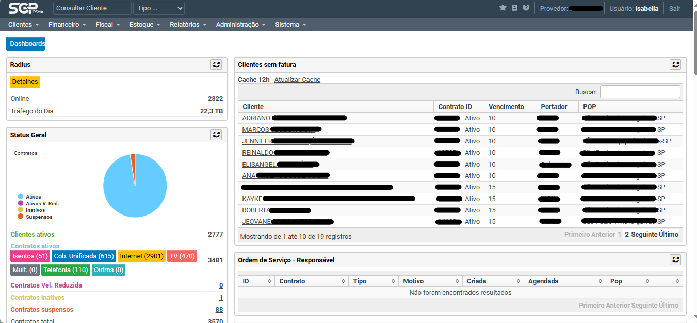

O SGP é o sistema que usamos para gerenciar diversos aspectos da empresa. Ele possui várias
funcionalidades, mas, como atendentes, nossa utilização é focada no controle e suporte ao cliente.

Figura 1 — Tela inicial do sistema SGP. Alguns dados sensíveis dos clientes foram
ocultados por questões de privacidade.
No SGP, podemos:
Cadastrar clientes novos e acessar dados de clientes já registrados.
Provisionar a ONU, o equipamento que permite o acesso à internet.
Realizar suporte remoto, incluindo troca de IP, checagem do extrato de tráfego e
verificação do sinal pelo FTTx.
Gerenciar o financeiro, acompanhando boletos em atraso e garantindo que os pagamentos
estejam organizados.
Registrar anotações, mantendo um histórico atualizado e centralizado de informações
importantes sobre os clientes.
O sistema facilita nosso trabalho ao centralizar as informações e agilizar
processos, tornando o atendimento mais eficiente e organizado.